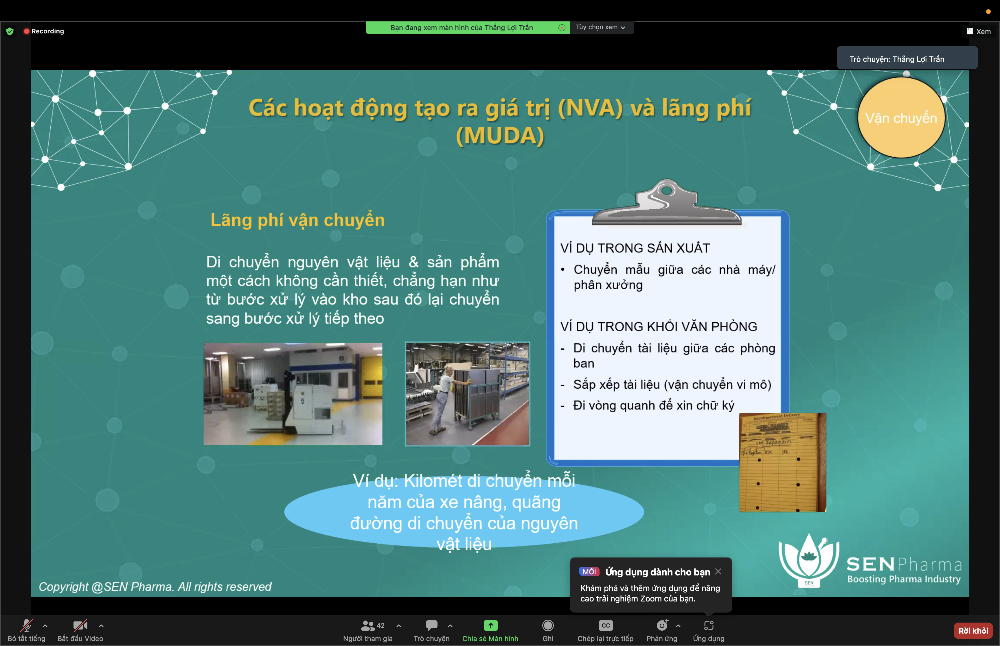

The ISPE Baseline® Guide: Sterile Product Manufacturing Facilities (Third Edition) covers engineering aspects of designing new sterile products manufacturing facilities and modifications of existing facilities. The Guide focuses on how to provide cost-effective facilities which make best use of available modern technologies to ensure that products of the highest quality are consistently manufactured.
Temperature 320C theo cach tinh Log10120
